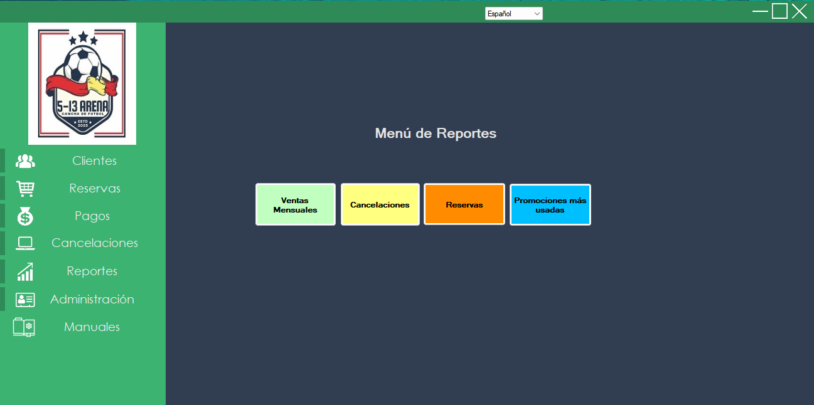
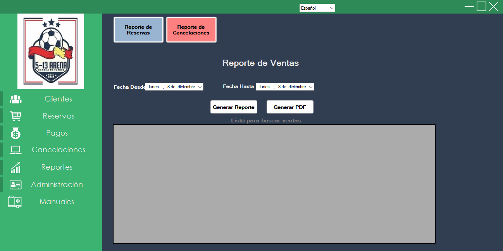
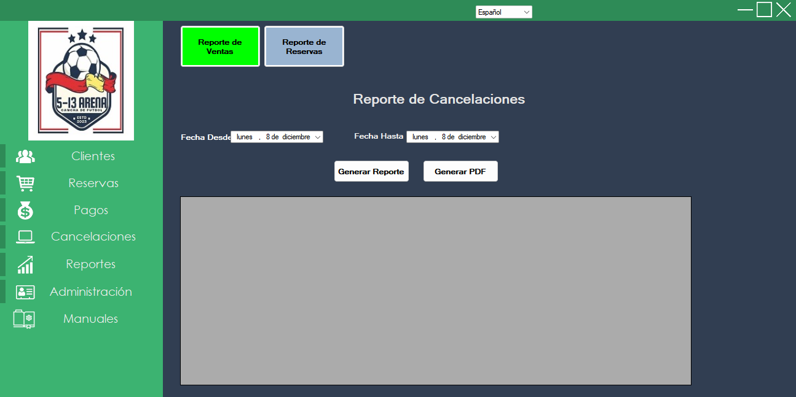
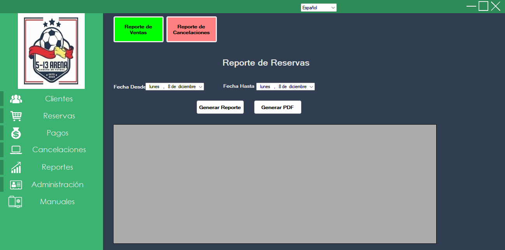
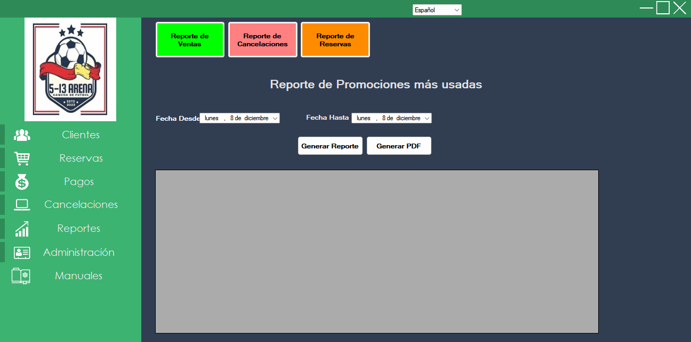

El sistema permite generar reportes para análisis de la gestión. Los reportes pueden visualizarse, descargarse o imprimirse.

Seleccione el rango Fecha Desde / Fecha Hasta y haga clic en Generar Reporte. Desde la vista, puede descargar el reporte con los datos visualizados y ver el total de ventas del período.

Funciona de forma similar: elija un rango de fechas y genere el informe. El reporte está disponible para descarga.

Permite analizar la ocupación por períodos seleccionados. Incluye un botón de Imprimir para obtener una copia en papel o PDF.

Muestra un ranking de promociones por cantidad de usos en el período seleccionado. La interacción y las salidas de descarga son equivalentes a los reportes anteriores.
